Game project
Vyrva: A City Torn from the Normal World
A dark fantasy Unity project shaped around a suffering port city. You cannot save Vyrva completely, but you may be able to ease its pain, just a little. Survive social collapse, sea-borne rituals, human-made abominations, the wrath of nature, and secrets rising from the deep.
Why I am building Vyrva
I have been fascinated by fantasy worlds since first encountering The Lord of the Rings, and later the unsettling imagination of H. P. Lovecraft and the interactive worlds of Baldur's Gate and Dungeons & Dragons. For years, many of my own settings, characters, and stories remained only loosely developed ideas. Modern AI-assisted creative tools now make it much easier to turn those imagined worlds into something visible, playable, and coherent.
Vyrva is an independent creative project developed in my free time. It is not presented as a competing professional direction, but as a place where I can explore world-building, systems design, game AI, visual storytelling, and the interaction of many complex elements inside a living world.
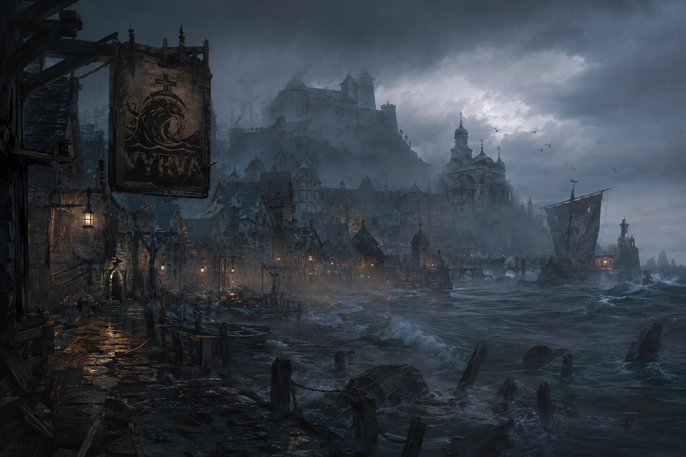
The city between two broken bargains
World Premise
Vyrva flourished after its Salt Baron struck a bargain with a power beneath the sea. The city received wealth, medicine, and access to what lay below the coast. In return, the sea's servants were allowed to experiment on the sick, lurk in the shadows, and study the land.
But the Baron's curiosity grew with his mines. He ordered them deeper beneath the city, deeper than the sea wanted him to go.
Beneath his castle, the Baron discovered ancient tunnels: strange architecture, buried libraries, statues, sealed chambers, and traces of a civilization that should not have been there. What the sea had given him began to look like scraps compared with what still lay hidden below.
Convinced that he had been cheated, the Baron started taking what had never been offered. If the sea had made a fool of him, then its servants would learn no new secrets from Vyrva without his permission.
The sea believes it already paid its price. The Baron believes the bargain was a deception. Between them, Vyrva and its people pay for both claims.
Now Vyrva hides its remaining children behind a thickening Mist. The same Mist has brought you into the city. Prove yourself useful before it closes.
Development note
Vyrva is an active prototype and an evolving world. Names, mechanics, balance, districts, enemy designs, and story details may change as the game develops. Nothing on this page should be read as final until the project reaches a release-ready form.
Playable character
Who are you?
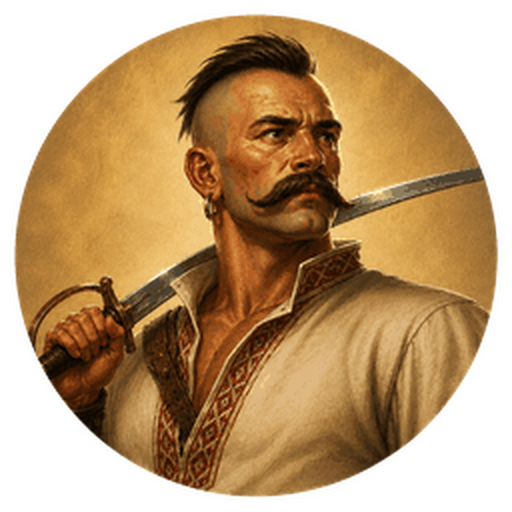
First playable archetype in development
The Kharakternyk
Cossack mystic and unwelcome protector
He was born in the wide yellow steppe beneath blue skies, far from the drowned streets of Vyrva.
In battle, people saw him move too quickly, endure too much, and strike with strength that did not look natural. Some called it skill. Others whispered another word: Kharakternyk.
He did not come to Vyrva for gold or glory. He came because others called for help. But the moment he stepped into the city, something changed.
In ordinary places, fear remains only fear. In Vyrva, fear has weight. Words, dreams, rumors, and old stories can become as real as an apple on a tree.
The enemies who once feared the Kharakternyk imagined what he could become. In Vyrva, those fears began to answer.
Every power in Vyrva is useful. Every power is also a debt. Now he owes the Mist, and the Mist does not let debtors choose when the debt is paid.
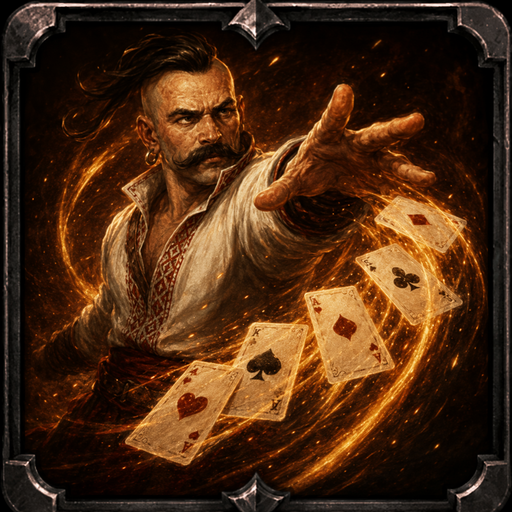
Card Throw
A true Cossack never runs out of cards. Throw a fan of enchanted cards through enemies in front of him.
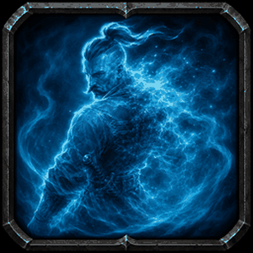
Invisibility
Cloud the sight of the living and the dead. The Kharakternyk slips from view, crosses danger unseen, and strikes before his presence is understood.
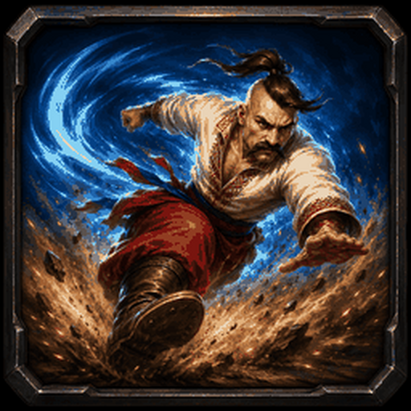
Hopak Leap
When a Cossack dances, even the ground answers. Leap into the chosen area; the landing shakes the earth and staggers nearby enemies.
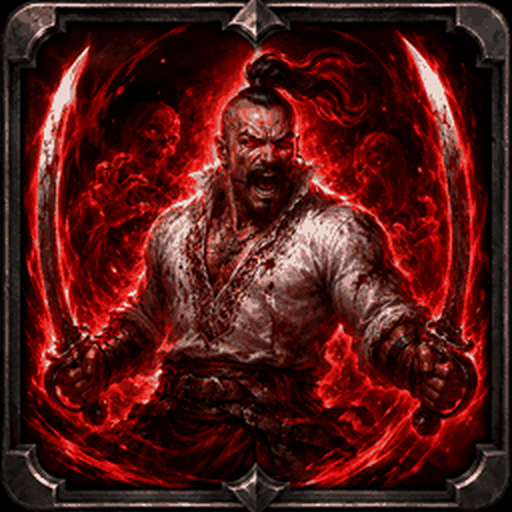
Ancestral Fury
Draw strength from the land and from those who defended it before. Enter a furious state that overwhelms nearby enemies. Souls claimed during the fury are drawn into the ancestral storm.
Bestiary concepts
What waits in the Mist?
The Kharakternyk is the most developed character, but the wider bestiary is still being explored. Creature names, roles, and designs may change as each district becomes playable. Vyrva draws on demonic, undead, and nature-bound entities from Ukrainian and Eastern-European folklore, reinterpreted through the city's drowned history.
These are possible directions rather than a confirmed final roster. Each creature that enters the game will be adapted to a particular district, dilemma, or consequence of Vyrva's broken bargains.
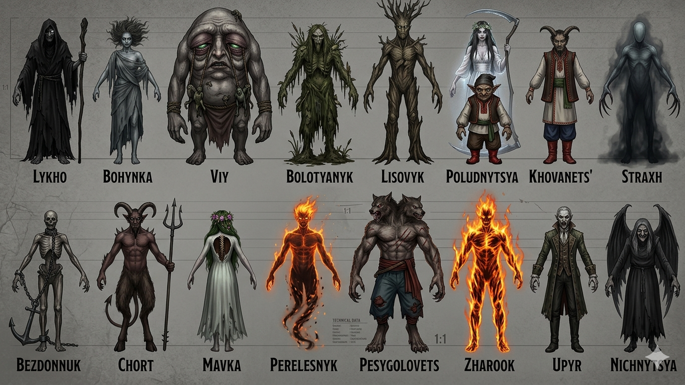
The contested city
Every night reaches farther inland
The first drowned appear at the beach, river mouth, and forest edge. Later waves cross the docks, enter the lower streets, and finally reach the market and church. The safest farming ground steadily becomes the next battlefield.
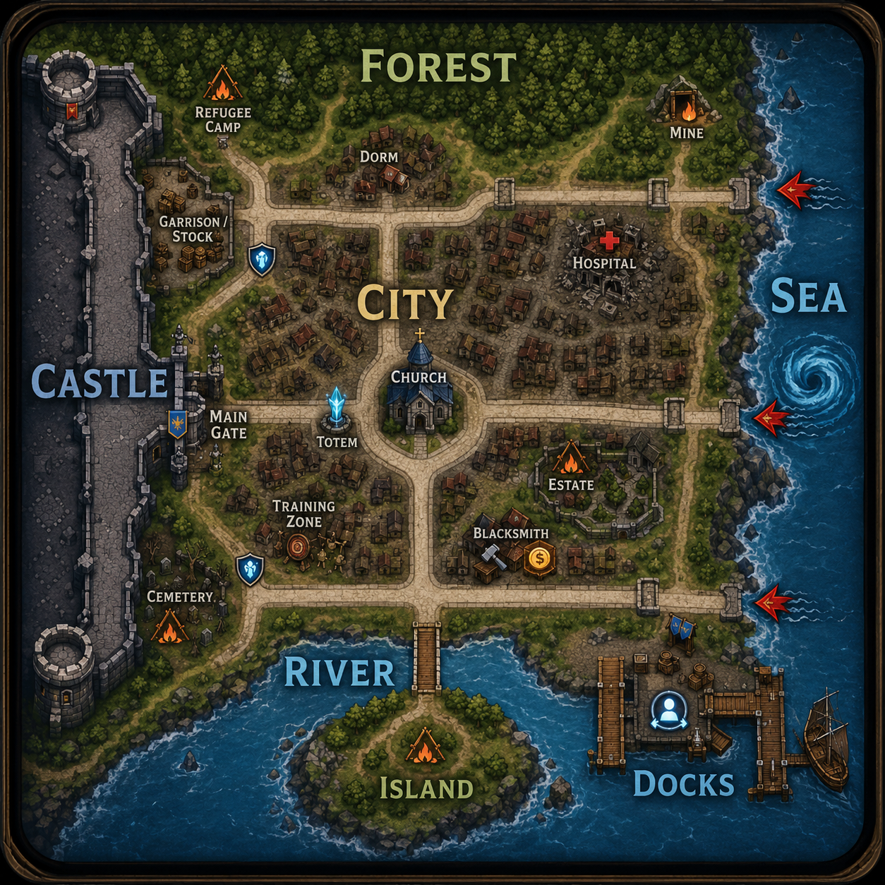
One night in Vyrva
Prepare by day. Endure by night.
Planned match structure. A prototype match lasts approximately twelve minutes: three escalating night waves followed by a final Mist collapse. Daylight creates a short interval for cleanup, shopping, healing, and repositioning. Night introduces a limited enemy wave with a fixed spawn budget, so each attack can end, but its survivors and consequences remain.
75 seconds
Arrival - Sunny day
The damaged city is still functioning. Vendors open, guards return to their posts, and the player scouts the beach, river, and forest edge for an early farming route.
First wave
First Tide - Beach and docks
20 weak drowned and one elite attack from the coast. Guards hold the roads while players farm near them without allowing the guards to win the battle alone.
Second wave
Rising Water - Docks and river
The attack spreads into warehouses, crossings, and lower streets. Elites threaten outer vendors, and the player must choose between safe farming and protecting the city.
Third wave
City Breach - Central streets
Larger groups and a heavy enemy reach the market and church approaches. Safe routes close, rewards rise, and rival teams are increasingly pushed into the same spaces.
Final phase
Final Seal - Mist collapse
Normal shopping and farming end. The Mist closes around the surviving teams, reduces visibility and movement outside the safe area, and forces the final confrontation.
Edge farms
Beach, river, and forest
Low reward / low danger
Dock roads
Guards against the first drowned
Basic gold / controlled danger
Outer city
Warehouses, crossings, threatened vendors
Better rewards / meaningful consequences
Central city
Market and church streets
Elite drops / high danger
Final Mist
No ordinary farming
Survival and confrontation
The city remembers what happens
Every useful action has a cost
Vyrva is not only a sequence of enemy waves. The match tracks the condition of the city and lets earlier decisions alter what remains available later.
Wave
Controls where enemies enter, how many appear, how many elites join them, and which routes the Mist closes.
City damage
Rises when guards, vendors, or civilians are lost and when buildings are breached. Greater damage means higher prices, fewer safe locations, and a harder final night.
Mist strength
Grows through death and conflict. Killing monsters provides gold but feeds the Mist. Saving vendors preserves the economy. Fighting rival players may bring immediate rewards while accelerating the final collapse.
The player becomes stronger by fighting for Vyrva, while every fight helps the Mist close around it.
A city of unresolved debts
The map is built from dilemmas, not decorations
Each major district preserves a decision made before or during the catastrophe. These places are intended to become encounters in which the history of the city, its enemies, and the player's objectives occupy the same space.
The Estate
He refused to abandon his property when the threat arrived. Now the owner remains inside forever, transformed into the final possession of the estate he would not surrender.
The Barnacle Clinic
Growths taken from the sea promised inexpensive prosthetics and new treatments. The clinic became a site of failed procedures, strange infections, and experiments that continued long after their original purpose was forgotten.
The Refugee Camp
The refugees were never admitted through the castle gate. Later, the citizens who had once supported them withdrew as every household began fighting for its own survival. The camp remains outside both the protection of the castle and the sympathy of the city.
The Cemetery
After the catastrophe, the old cemetery became safer and more valuable than many living districts. Burial plots rose beyond what ordinary families could afford. In Vyrva, even the dead must pay for their place.
The Burned Archive
During the first days of the catastrophe, the archive was burned to erase debts and military draft lists. The same fire destroyed the citizenship documents required for evacuation. People escaped one obligation only to lose the proof that they belonged anywhere else.
In the current prototype
Combat and Systems
The current Unity prototype includes top-down movement and combat, guards and drowned enemies, environmental inspection, a placeable survival totem, shops, temporary progression, and early encounter scheduling. The next stage is to connect these working systems to the broader match structure, allowing the condition of the city, its vendors, defensive routes, and the growing Mist to respond to each night.
Current Unity prototype
Vyrva in development
The current prototype brings the city into a playable Unity environment. These development screenshots show its connected streets, coastal approaches, forest boundary, combat encounters, and early progression systems. Visuals, balancing, and environmental detail remain in development.
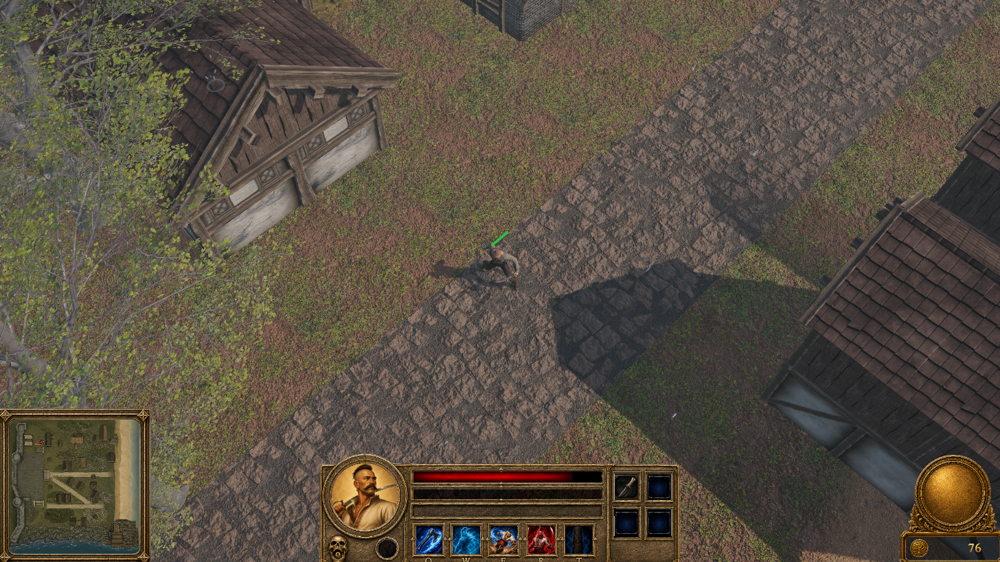
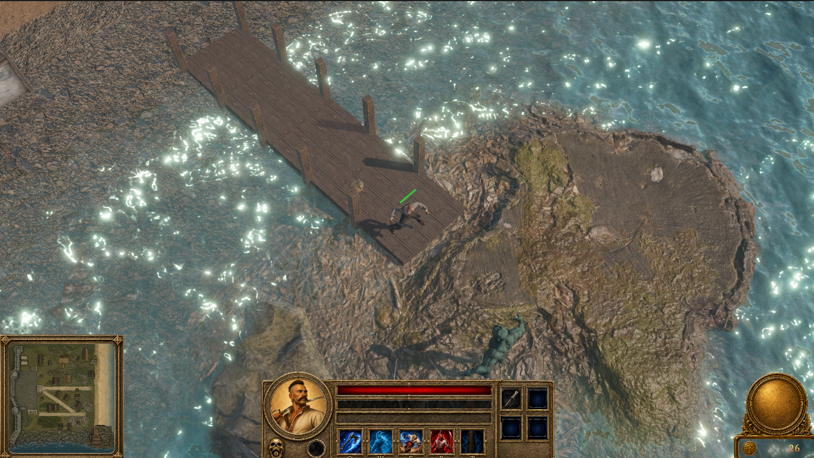
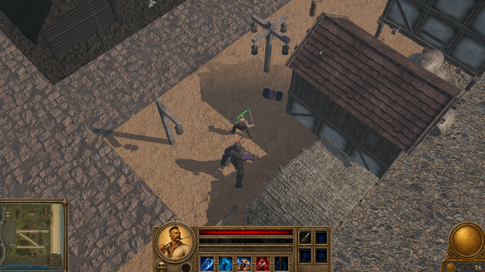
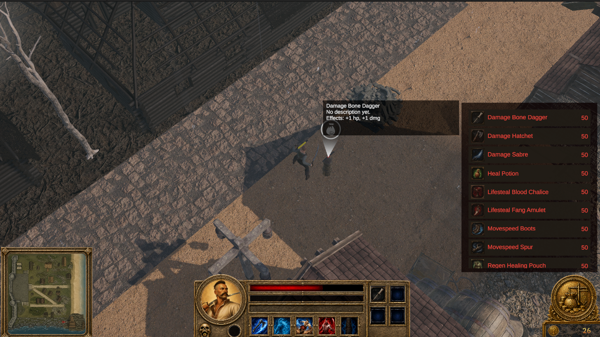
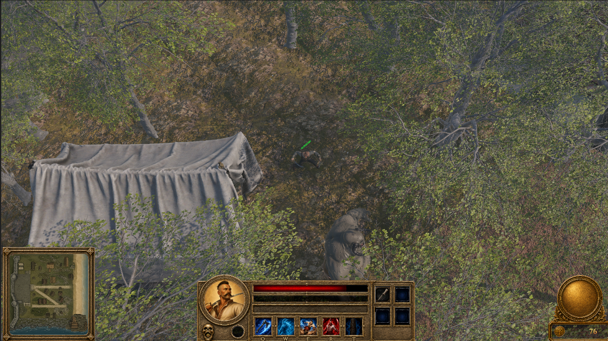
Rights and Attribution
Vyrva is an original game project, world, and intellectual-property concept by Oles Matsyshyn. Unless otherwise stated, the Vyrva setting, writing, gameplay concepts, systems descriptions, and project presentation on this website are © Oles Matsyshyn. Third-party Unity assets, tools, fonts, and software remain the property of their respective rights holders and are used under their applicable licenses. Designs, screenshots, character concepts, and mechanics shown here are development materials and may change.
Support and collaboration
This project is developed independently in my free time and at my own expense. If you are interested in supporting its development, suggesting mechanics, discussing technical solutions, or helping the project grow, contact me at oles.matsyshyn@gmail.com.
External funding has not yet been sought, so I am not currently able to offer paid positions. For now, the most useful support is thoughtful feedback, technical discussion, asset suggestions, mechanics ideas, and interest in watching the development process.
Vyrva will remember those who helped it appear.
With permission, supporters and contributors may be acknowledged in ways that fit the world: a name on a wanted board, a record in the Water Criminals registry, a forgotten donor plaque, a statue, a portrait, a grave marker, a harbor document, or another in-world artifact where it makes narrative sense.
Community interest
Would you like to watch Vyrva being built?
If there is sufficient interest, I will move part of the development process to Twitch. The streams would show how I combine physics-inspired reasoning, creative worldbuilding, Unity development, and AI-assisted workflows to build the game in real time.
Current challenges include environmental detail, transitions between districts, lighting, pocket universes, character skills, unit AI, and many other systems. Viewers would be able to follow the process and participate in the discussion as the project develops.
If you would be interested in these streams, please send me a short message.
Request development streams